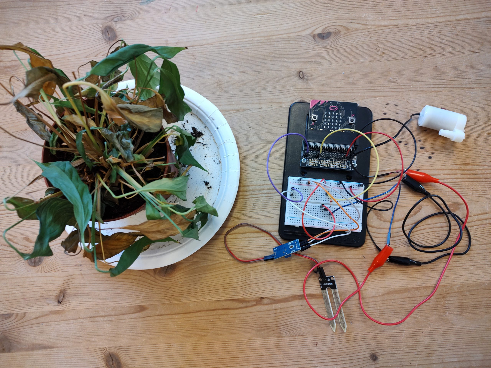
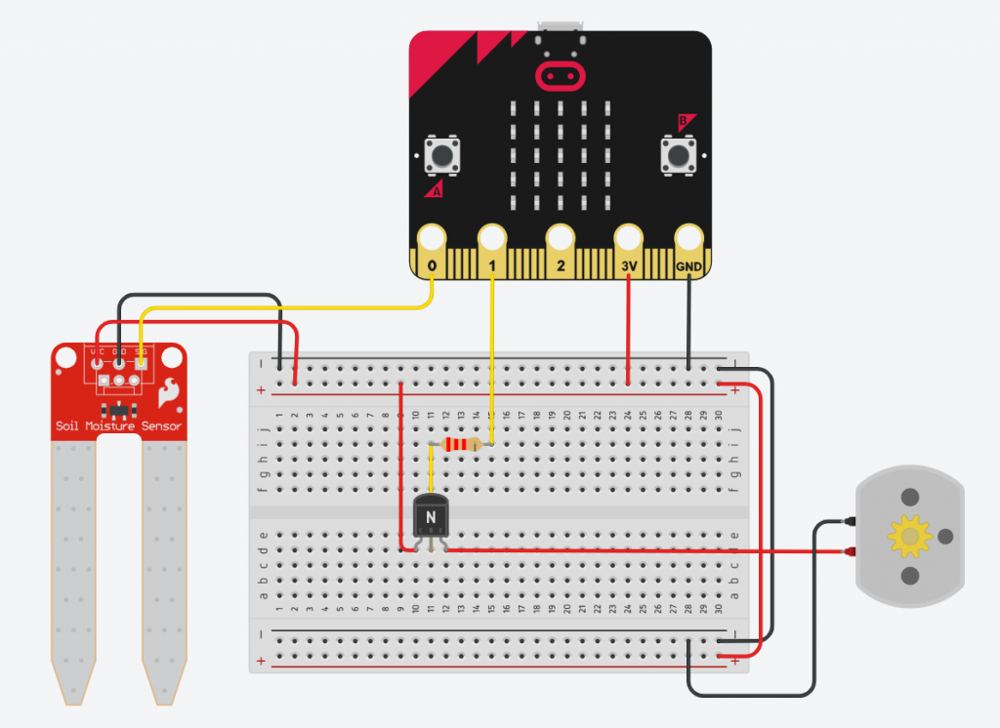
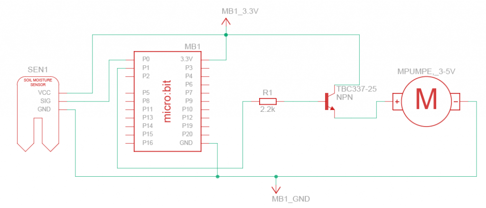
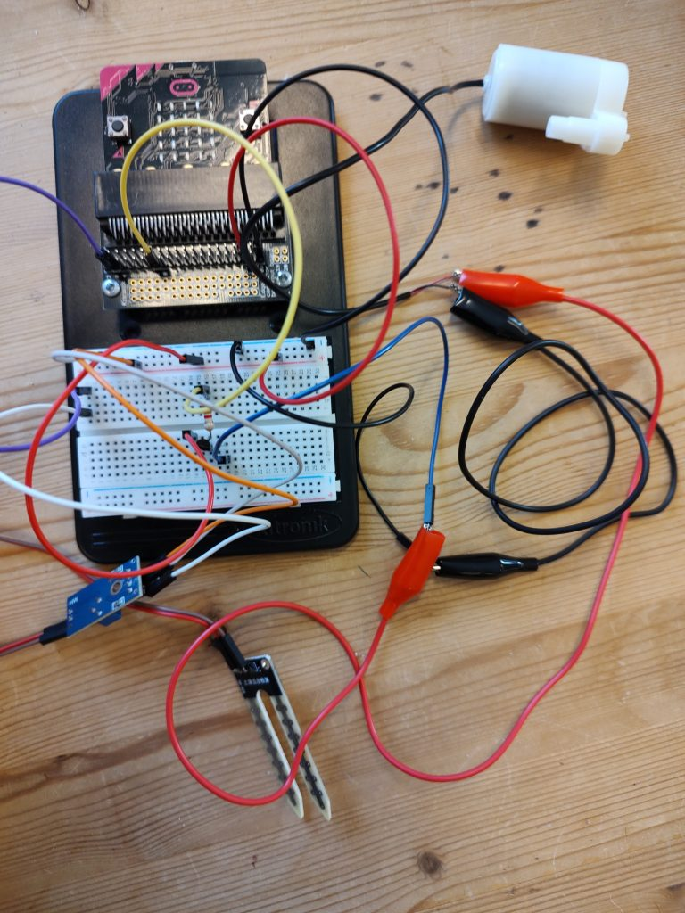
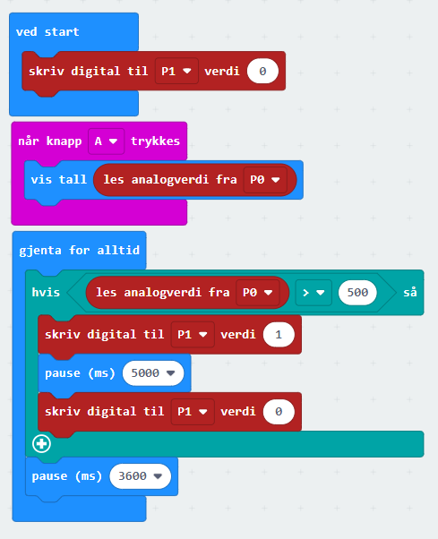

Automatisk potteplantevanning#
#
Av Sigurd Rage, USN
Introduksjon#
I denne aktiviteten skal vi se på hvordan vi kan bruke en microbit til å styre en vannpumpe basert på sensordata fra en jordfuktsensor. Først kommer en beskrivelse av et nesten ferdig system med fuktsensor og pumpe koblet ferdig koblet til microbiten, deretter kommer et forslag til hvordan dette prosjektet kan gjennomføres i klasserommet. Prosjektet krever at man har tilgang på et “breakout board” for microbit, ellers er det utstyret som kreves hyllevare og relativt billig i anskaffelse.
Hele prosjektet, med halvferdig kode kan lastes ned her:
https://www.tinkercad.com/things/0w034yFNd52?sharecode=QMJCpwQsSBU0375orkOx1ITjqXw1VgHsDG9D1CzmHjE
Kompetansemål (LK2020)#
designe og lage et produkt basert på en kravspesifikasjon (4. trinn)
utforske teknologiske systemer som er satt sammen av ulike deler, og beskrive hvordan delene fungerer og virker sammen (4. trinn)
designe og lage et produkt basert på brukerbehov (7. trinn)
utforske, lage og programmere teknologiske systemer som består av deler som virker sammen (7. trinn)
bruke programmering til å utforske naturfaglige fenomener (10. trinn)
Aktiviteten passer nok best for elever fra 7. trinn og oppover som er vant til å bruke tilleggssutstyr til microbit, feks TinkerKit eller tilsvarende. Det er også et opplegg som kan kobles til elektrisitets- og kretslære.
Utstyrsliste#
Microbit (V1 eller V2)
Breakout board
Koblingsbrett
Jordfuktsensor (resistiv type)
Motstand 2.2 kΩ
Transistor NPN (feks BC377)
Vannpumpe (3 – 5V)
Eksperimentkabler
Krokodillekabler
Slange til vannpumpe
Vanntank
Potteplante
Koblingsskjema og komponenter#

I dette skjemaet er jordfuktssensoren koblet til P0 og pumpestyringen koblet til P1. Transistoren virker som en bryter for pumpestyring, og får styringssignalet fra P1. Mellom P1 og transistoren ligger en motstand på 2.2kΩ, da transistoren kun trenger bittelitt strøm for å “slå inn”
Jordfuktsensor#
I dette prosjektet brukes en såkalt resistiv jordfuktssensor, som er den enkleste og billigste typen. Denne sensoren har normalt 3 eller 4 koblingspunkter ut fra modulen. VCC kobles til 3V og GND kobles til 0V. AO (analog out) vil gi en spenning inn på P0 avhengig av hvor fuktig jorden i potteplanten er. På noen sensortyper står det SIG istedet for AO på signalpinnen (se kretstegning)
Noen slike sensorer har også en DO (digital out), denne skal ikke brukes.
Sensoren måler elektrisk motstand i plantejorda. Når jorda blir fuktig vil den lede mer strøm mellom elektrodene enn hvis den er tørr. Typisk vil spenningen fra AO være høyere ved tørr jord og lavere ved fuktig jord. Denne spenningsverdien blir avlest som en digital heltallsverdi av microbit, som vi kan bruke i styringsprogrammet til å ta en avgjørelse om potteplanten trenger vanning. For å en fornuftig terskelverdi for vanning bør man teste denne sensoren i jord.
En svakhet med denne typer sensorer er at de korroderer i fuktig miljø, som gir de en noe kort levetid. Det finnes også kapasitive jordfuktsensorer, som koster noe mer og har litt mer komplisert tilkobling.
Vannpumpe#
Dette er en vannpumpe som drives av en DC-motor (likestrømsmotor) som krever mellom 3 og 5V. Pumpemotoren trekker en god del strøm, og kan derfor ikke styres direkte fra pinnene til microbiten. Istedet kobles motoren rett på microbitens innebygde strømkilde, pinnene 3V og 0V, men for å kunne styre den, legger vi en transistor imellom. Da vil transistoren fungere som en elektronisk bryter til pumpen.
Microbit sine tilkoblingsporter kan maksimalt levere 10mA strøm, mens 3V – pinnen kan levere 90mA (V1) eller opptil 120mA (V2).
En annen ting å ha i bakhodet er at denne pumpen er relativt svak, så vannreservoaret bør være i samme høyde som potteplanten.
Transistor#
Transistoren er en av det 20. århundrets største oppfinnelser og har muliggjort alle de avanserte digitale enhetene vi omgir oss med til daglig. Det er en halvlederkomponent, og har 3 tilkoblinger: Base, Collector og Emitter. I denne kretsen fungerer transistoren rett og slett som en elektronisk bryter, som kan styre om det skal gå strøm igjennom eller ikke. Base kobles til +3V og Emitter kobles til 0V (eller GND). Hvorvidt det går strøm gjennom transistoren eller ikke styres av Collector. Det skal svært lite strøm til på Collector for at transistoren leder, derfor kobler vi en relativt stor motstand i serie foran denne terminalen (tilkoblingen).
Kretsskjema#

Over ser vi et mer standardisert kretsskjema for prosjektet. I sammenligning med koblingsskjemaet lenge opp er det mer abstrakt, men selve sammenkoblingen av komponentene er mer tydelig og oversiktlig.
Reell oppkobling (kabelspaghetti)#

Alle skjematiske fremstillinger av kretser ser som regel mye ryddigere ut på papir enn hvordan den faktiske kretsen blir seendes ut på brettet. Hvordan komponentene kobles sammen på koblingsbrettet, og hvordan man får koblet de eksterne delene inn på kretsen krever noe kunnskap om på hvilke måter dette kan gjøres. I litteraturen om teknologi i skolen kalles dette for “handlingskunnskap”.
I dette eksempelet har vi brukt eksperimentkabler, som er ferdig lagde kabler med hann- og hunnterminaler som passer til brettet, samt krokodillekabler for å koble på pumpen.
Det er også fullt mulig å koble at sammen kun med krokodillekabler, uten koblingsbrett, da blir kabelsalaten tilsvarende mer rotete 🙂
Programmering av styringsenheten#

Programmet over kan være et godt utgangspunkt for styring av pumpen, men den er ikke ferdig. Likevel, et par viktige momenter å ta med seg:
Sensorverdier fra jordfuktsensoren leses som analogverdi fra P0
Styring av pumpen skjer ved å sette digital verdi på P1 til 1 (3V) for å starte pumpen, og digital verdi P1 til 0 (0V) for å stoppe den.
I blokken “ved start” setter vi styringssignalet til pumpen til LOW, eller 0V for å være helt sikre på at pumpen ikke starter av seg selv
For å kunne lese av den digitale verdien fra jordfuktsensoren har vi en kodeblogg “når knapp A trykkes” som skriver denne verdien til skjerm. Dette kan være nyttig for å finne ut hva slags verdier som denne sensoren gir fra tørr eller fuktig jord.
Selve pumpestyringen skjer i “gjenta for alltid”-sløyfen. I denne eksempelkoden er grensen for at pumpen skal starte satt til verdien 500, men den reelle grenseverdien må finnes ved utprøving på en reell potteplante.
Dersom avlest verdi er høyere enn grenseverdien vil if-testen slå inn, og pumpen kjøres i 5 sekunder. Denne verdien må også finnes ved eksperimentering: hvor mye vann pumpes per tid, og hvor mye vann trenger potteplanten per vanning.
Deretter venter systemet i 1 minutt før den sjekker fuktigheten i potteplanten på nytt. Dette er nok alt for kort tid i en reell situasjon, og systemet trenger kanskje ikke å sjekke for vanning mer enn et par ganger om dagen. Dessuten trenger potteplanten noe tid for at vannet skal fordeles jevnt i jorden.
Altså:
Man må finne en reell grenseverdi for jordfuktsensoren slik at vanning kommer på ønsket tørrhet
Man må beregne hvor mye vann som trenges for hver vanning, og hvor lang tid dette tar for pumpen
Man må legge inn en generell forsinkelse slik at planten ikke overvannes. Typisk trenger man ikke å sjekke jordfukten mer enn en gang om dagen.
Koden kan lastes ned fra makecode.org her: https://makecode.microbit.org/_bfKHo6A08Ecc